리눅스마스터-2급 (2016-12-03 기출문제)
1과목: 리눅스 운영 및 관리
1. 현재 test.txt 파일에 대한 허가권은 654이다. 이 파일을 다음과 같이 변경하려고 할 때 틀린 것은? (문제 오류로 실제 시험에서는 모두 정답 처리되었습니다. 여기서는 1번을 누르면 정답 처리 됩니다.)
- chmod 754 test.txt
- chmod u+rwx,go+r test.txt
- chmod u=rwx,g=rx,o=r test.txt
- chmod u+x test.txt
(정답률: 88%)

2. 다음 ( 괄호 ) 안에 들어갈 내용으로 알맞은 것은?
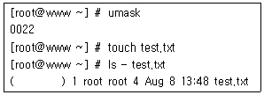
- -rwxr-xr-x
- -rwxrw-rw-
- -rw-r—-r--
- -r--r--r--
(정답률: 61%)
3. 다음 명령에 대한 설명으로 알맞은 것은?
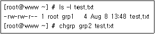
- root가 grp2로 변경된다.
- grp1이 grp2로 변경된다.
- test.txt가 grp2로 변경된다.
- 해당 명령은 틀린 명령으로 실행되지 않는다.
(정답률: 82%)
4. test.txt 파일의 속성이 다음과 같은 상태이다. 소유자에게는 읽기, 쓰기, 실행 권한을 부여하고, 그룹과 다른 사용자에게는 읽기 권한만 부여할 때 ( 괄호 ) 안에 들어갈 내용으로 알맞은 것은?
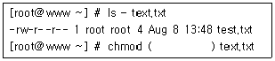
- u+x,go+x
- u+rwx,go+rx
- 644
- 744
(정답률: 77%)
5. 다음 중 리눅스 파일의 퍼미션을 설정하는 사용자 구분으로 틀린 것은?
- 최고관리자(root)
- 소유자(owner)
- 그룹(group)
- 기타(public)
(정답률: 60%)
6. 다음 중 리눅스 시스템 부팅 시 파일시스템 점검과 관련하여 fsck 명령어에 의해 참조되어지는 필드 영역으로 알맞은 것은?
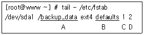
- A
- B
- C
- D
(정답률: 52%)
7. /dev/sda3 파티션을 ext3 파일 시스템으로 생성하려고 한다. 다음 ( 괄호 ) 안에 들어갈 명령어로 틀린 것은?
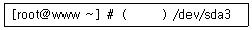
- mkfs.ext3
- mke2fs -t ext3
- mke2fs -j
- mkfs -c
(정답률: 63%)
8. 다음중 리눅스파일시스템에 대한설명으로 틀린 것은?
- Superblock은 파일 시스템의 크기와 같은 전체적인 파일 시스템에 대한 정보를 갖는다.
- nfs는 MS-DOS 파일 시스템의 FAT와 호환을 위해 사용한다.
- inode는 파일 종류, 소유권 등의 정보를 가지고 있다.
- iso9660은 표준 CD-ROM 파일 시스템이다.
(정답률: 61%)
9. 다음 중 CD-ROM, DVD-ROM 등과 같은 보조 기억장치의 미디어를 꺼낼 때 사용하는 명령으로 알맞은 것은?
- mount
- eject
- fdisk
- umount
(정답률: 79%)
10. 다음 중 데이터의 복구 확률을 높이기 위해 사용되는 저널링 파일 시스템으로 틀린 것은?
- JFS
- XFS
- ext2
- ReiserFS
(정답률: 71%)
11. 다음 ( 괄호 ) 안에 들어갈 내용으로 알맞은 것은?
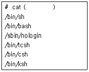
- /etc/profile
- /etc/passwd
- /etc/bashrc
- /etc/shells
(정답률: 79%)
12. 다음에서 설명하는 내용으로 알맞은 것은?
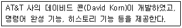
- C 셸
- bash
- tcsh
- ksh
(정답률: 78%)
13. 다음 ( 괄호 ) 안에 들어갈 내용으로 알맞은 것은?
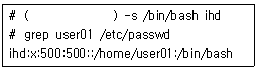
- usermod
- chkconfig
- service
- gedit
(정답률: 73%)
14. 다음 조건에 맞는 명령으로 알맞은 것은?
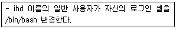
- chsh -s /bin/bash
- usermod -s /bin/bash ihd
- chsh /bin/bash
- usermod /bin/bash ihd
(정답률: 50%)
15. 다음 중 환경 변수의 종류와 설명으로 틀린 것은?
- PS1 : 셸 프롬프트를 선언 할 때 사용하는 변수
- HISTSIZE : 셸의 스택에 저장되는 명령어의 개수를 선언할 때 사용하는 변수
- TERM : 로그인한 터미널의 종류가 저장되는 변수
- LANG : 실행 파일을 검색할 디렉터리를 선언할 때 사용하는 변수
(정답률: 75%)
16. 다음 ( 괄호 ) 안에 들어갈 내용으로 알맞은 것은?
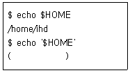
- $HOME
- /home/ihd
- '$HOME'
- '/home/ihd'
(정답률: 56%)
17. 다음 중 아래 조건을 만족하는 환경 설정 파일로 알맞은 것은?(오류 신고가 접수된 문제입니다. 반드시 정답과 해설을 확인하시기 바랍니다.)
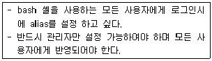
- /etc/shells
- /etc/bash_profile
- /etc/profile
- /etc/bash_logout
(정답률: 41%)
18. 다음 중 예제와 같이 history 명령어 수행시 명령어의 수행 시간을 출력하도록 하는 설정으로 알맞은 것은?
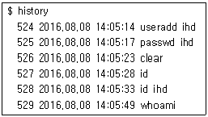
- export HISTSIZE="%Y.%m.%d %T "
- export HISTFILE="%Y.%m.%d %T "
- export HISTFILESIZE="%Y.%m.%d %T "
- export HISTTIMEFORMAT="%Y.%m.%d %T "
(정답률: 65%)
19. 다음에서 설명하는 내용으로 알맞은 것은?
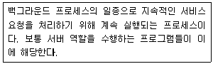
- inetd
- xinetd
- daemon
- signal
(정답률: 83%)
20. 다음에서 설명하는 내용으로 알맞은 것은?
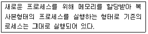
- inetd
- exec
- fork
- foreground
(정답률: 73%)
21. 다음 중 포어그라운드 프로세스를 백그라운드 프로세스로 전환하기 위해 사용하는 인터럽트 키 조합으로 알맞은 것은?
- [Ctrl]+[\]
- [Ctrl]+[c]
- [Ctrl]+[d]
- [Ctrl]+[z]
(정답률: 71%)
22. 다음 그림은 로그인한 사용자를 로그아웃시키기 위해 확인하는 과정이다. ( 괄호 ) 안에 들어갈 내용으로 알맞은 것은?
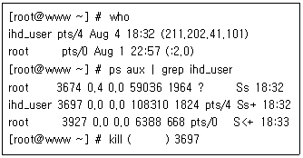
- 9
- 15
- -9
- -15
(정답률: 64%)
23. 다음에서 설명하는 내용으로 알맞은 것은?
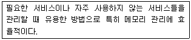
- inetd
- standalone
- fork
- exec
(정답률: 58%)
24. 다음 그림에 해당하는 명령으로 알맞은 것은?
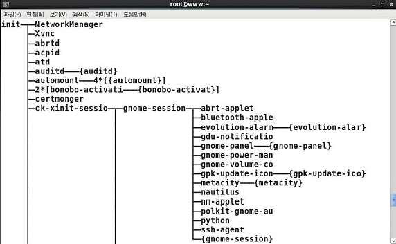
- ps
- pstree
- jobs
- top
(정답률: 83%)
25. 다음 중 백그라운드로 실행중인 프로세스를 확인하는 명령으로 알맞은 것은?
- bg
- signal
- nohup
- jobs
(정답률: 72%)
26. 다음 그림과 같은 상황에서 nice 명령을 실행 시에 적용되는 bash 셸의 NI값으로 알맞은 것은?
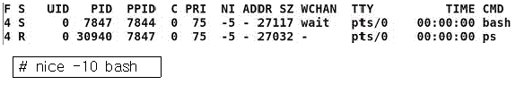
- -15
- -10
- 5
- 10
(정답률: 49%)
27. 다음 중 작업 중인 터미널이 닫혀도 실행 중인 프로세스를 백그라운드 프로세스로 작업될 수 있도록 해주는 명령으로 알맞은 것은?
- nohup tar cvf source.tar /opt/src
- nohup tar cvf source.tar /opt/src &
- bg tar cvf source.tar /opt/src
- bg tar cvf source.tar /opt/src &
(정답률: 68%)
28. 작성된 백업 스크립트인 backup.sh를 매주 화요일과 목요일 오전 4시 2분에 실행하려고 한다. ( 괄호 ) 안에 들어갈 내용으로 알맞은 것은?
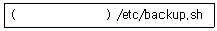
- 4 2 * * 2,4
- 4 2 * * 3,5
- 2 4 * * 2,4
- 2 4 * * 3,5
(정답률: 75%)
29. 다음 중 emacs 편집기에 대한 설명으로 알맞은 것은?
- 리처드 스톨만이 개발한 고성능 문서 편집기로 포괄적인 통합환경을 제공한다.
- 워싱턴 대학의 Aboil Kasar가 만든 유닉스용 편집기로 윈도우의 메모장처럼 간편하게 사용 가능하다.
- 브람 무레나르가 vi 편집기와 호환되면서 독자적으로 다양한 기능을 추가한 편집기이다.
- 1976년 빌 조이(Bill Joy)가 개발하였다.
(정답률: 75%)
30. 다음은 vi 편집기 실행에 대한 예이다. 명령에 대한 설명으로 알맞은 것은?
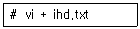
- ihd.txt 파일을 읽기 전용으로 열기
- ihd.txt 파일을 열면서 행번호를 붙이기
- ihd.txt 파일을 열면서 커서의 위치를 마지막 줄로 이동하기
- ihd.txt 파일을 열면서 커서의 위치를 첫번째 줄으로 이동하기
(정답률: 58%)
31. 다음 중 pico 편집기에 대한 설명으로 틀린 것은?
- 워싱턴대학의 Aboil Kasar가 개발한 텍스트 편집기이다.
- pico의 복제 프로그램에는 nano가 있다.
- Pine이라는 E-mail 클라이언트 프로그램과 같이 배포되었다.
- pico 편집기는 GPL 라이선스를 따른다.
(정답률: 56%)
32. 다음 중 vi 편집기를 통해 3번째 줄 부터 9번째 줄까지 주석을 제거하는 명령으로 알맞은 것은? (단, 셸에서 주석은 '#' 이다.)
- : 3,$s/^/#/
- : 3,$s/^#//
- : 3,9s/^/#/
- : 3,9s/^#//
(정답률: 55%)
33. 다음 중 다양한 편집기에서 프로그램 종료할 때 입력하는 조합으로 알맞은 것은?
- pico : [Ctrl]+[x]
- emacs : [Ctrl]+[a] 이후에 [Ctrl]+[s]
- pico : [Ctrl]+[a]
- emacs : [Ctrl]+[n] 이후에 [Ctrl]+[u]
(정답률: 66%)
34. 다음 중 vi 편집기의 3가지 모드로 틀린 것은?
- 작업 모드
- 명령 모드
- 입력 모드
- ex 모드
(정답률: 61%)
35. 다음 중 yum 명령을 사용한 패키지 설치, 삭제 등 작업 이력을 확인하기 위한 명령으로 알맞은 것은?
- yum list
- yum history
- yum info
- yum version
(정답률: 68%)
36. 다음 tar 옵션 중 압축 또는 해제시 처리과정을 자세히 보여주는 것으로 알맞은 것은?
- -s
- -v
- -p
- -z
(정답률: 75%)
37. 다음 중 /home 디렉토리를 home.tgz 파일로 압축하는 명령으로 알맞은 것은?
- tar -zcvf home.tgz /home
- tar -zxvf home.tgz /home
- tar -zcvf /home home.tgz
- tar -zxvf /home home.tgz
(정답률: 45%)
38. 다음 중 gzip 에 의해 압축되어 있는 텍스트 파일의 내용을 확인할 때 사용하는 명령어로 알맞은 것은?
- gcat
- zcat
- ncat
- mcat
(정답률: 57%)
39. 다음 중 ntpd 패키지가 설치되었는지 확인하는 명령으로 알맞은 것은?
- rpm -i ntpd
- rpm -e ntpd
- rpm -q ntpd
- rpm -U ntpd
(정답률: 51%)
40. 다음 rpm 옵션 중에서 패키지 설치, 삭제시 의존성을 무시하고 진행하기 위해 사용하는 옵션으로 알맞은 것은?
- --noscripts
- --nodigest
- --nosignature
- --nodeps
(정답률: 78%)
41. 다음 yum 옵션 중에서 업데이트가 가능한 패키지 목록을 확인하기 위한 옵션으로 알맞은 것은?
- info
- check-update
- list
- search
(정답률: 61%)
42. 다음 중 rpm 검증 코드에 대한 설명으로 틀린 것은?
- S : 파일 소유자 변경
- M : 파일 모드 변경
- 5 : MD5 체크섬 변경
- L : 심볼릭 링크 변경
(정답률: 51%)
43. 다음 ( 괄호 ) 안에 들어갈 내용으로 알맞은 것은?
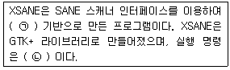
- ㉠ X-Window ㉡ xsane
- ㉠ X-Window ㉡ sane
- ㉠ X-Client ㉡ xsane
- ㉠ X-Client ㉡ sane
(정답률: 72%)
44. 다음 ( 괄호 ) 안에 들어갈 내용으로 알맞은 것은?
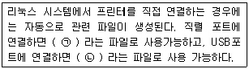
- ㉠ /dev/lp0 ㉡ /dev/lp0/usb
- ㉠ /dev/lp0 ㉡ /dev/usb/lp0
- ㉠ /dev/print/lp0 ㉡ /dev/lp0/usb
- ㉠ /dev/print/lp0 ㉡ /dev/usb/lp0
(정답률: 64%)
45. 다음 설명으로 알맞은 것은?
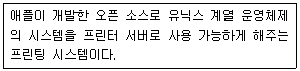
- CUPS
- LPRng
- ALSA
- OSS
(정답률: 75%)
46. 다음 중 사용 가능한 SCSI 및 USB 스캐너의 정보를 출력해주는 명령으로 알맞은 것은?
- sane-find-scanner
- alsactl
- xcam
- findstr
(정답률: 73%)
47. lp명령으로 파일의 내용을 4매 출력하려고 한다. 다음 중 ( 괄호 ) 안에 들어갈 내용으로 알맞은 것은?
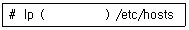
- -4
- -P 4
- -# 4
- -n 4
(정답률: 54%)
48. 다음 명령어를 실행 시켰을 때 해당되는 결과로 틀린 것은?
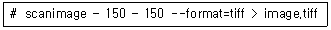
- 150*150 mm 크기로 스캔한다.
- 이미지 형식을 기본 설정된 값으로 스캔한다.
- 파일 이름은 image.tiff로 저장한다.
- 이미지 파일 형식은 tiff 이다.
(정답률: 76%)
2과목: 리눅스 활용
49. 다음 중 콘솔에서 X 윈도를 실행시키는 명령으로 알맞은 것은?
- startgui
- startx
- xstart
- guistart
(정답률: 69%)
50. 다음 중 X 윈도에 대한 설명으로 틀린 것은?
- 명령 줄 인터페이스 환경이다.
- 네트워크 프로토콜 기반의 서버/클라이언트 모델을 지향한다.
- 데스크톱 환경으로 GNOME, KDE가 있다.
- 원격 연결을 지원한다.
(정답률: 59%)
51. 다음 중 윈도우 매니저의 종류로 알맞은 것은?
- KDE
- GRUB
- Mutter
- GNOME
(정답률: 52%)
52. 다음 중 리눅스 부팅시 CLI 환경 또는 GUI 환경으로 시작할 수 있도록 설정하는 파일로 알맞은 것은?
- /etc/fstab
- /etc/profile
- /etc/inittab
- /etc/hosts
(정답률: 71%)
53. 다음 ( 괄호 ) 안에 들어갈 내용으로 알맞은 것은?
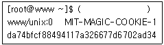
- xauth list $DISPLAY
- xhost list $DISPLAY
- xauth list DISPLAY
- xhost list DISPLAY
(정답률: 61%)
54. 다음 중 GNOME 데스크톱 기반의 파일 관리 프로그램으로 알맞은 것은?
- evince
- nautilus
- Totem
- eog
(정답률: 61%)
55. 다음 중 비트맵 이미지 생성, 편집, 확인이 가능한 프로그램으로 알맞은 것은?
- Cheese
- KGet
- Okular
- ImageMagick
(정답률: 74%)
56. 다음 중 원격지에서 X 윈도에 연결을 허락하거나 거부할 때 사용하는 명령어로 알맞은 것은?
- env
- xhost
- startx
- host
(정답률: 72%)
57. 다음 중 TCP/IP 계층 구조에서 계층별 데이터 캡슐화 단위로 알맞은 것은?
- 애플리케이션 계층 : Frames
- 트랜스포트 계층 : Segments
- 인터넷 계층 : Bits
- 네트워크 엑세스 계층 : Packets
(정답률: 48%)
58. LAN 전송방식 중에서 토큰링(Token Ring) 방식에 대한 설명으로 알맞은 것은?
- CSMA/CD 방식을 사용한다.
- 컴퓨터들을 근거리 통신망으로 연결시켜는 표준방식이다.
- 이더넷 전송방식 보다 가격이 저렴하기 때문에 다수의 사용자를 확보하고 있다.
- 먼거리까지 에러없이 전송이 가능하다.
(정답률: 34%)
59. OSI 7 계층 구조 중에서 전송계층 역할에 대한 설명으로 틀린 것은?
- 데이터의 흐름을 제어하는 기능을 제공한다.
- 데이터 전송 시 오류 제어 기능을 제공한다.
- 비연결 통신과 연결지향 통신을 선택하여 연결을 제어할 수 있다.
- 데이터에 논리 주소를 할당하는 기능을 제공한다.
(정답률: 55%)
60. 다음에서 설명하는 네트워크 계층의 프로토콜로 알맞은 것은?
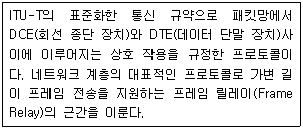
- X.25
- FDDI
- Token Ring
- Ethernet
(정답률: 48%)
61. 다음 중 기관종류를 나타내는 서브 도메인에 대한 설명으로 알맞은 것은?
- ac : 학교
- co : 연구소
- re : 정부기관
- go : 회사
(정답률: 63%)
62. TCP/IP 프로토콜에 대한 일반적인 설명으로 틀린 것은?
- 원래 군사적 목적으로 설립된 ARPAnet에서 사용하기 위해 만들어졌다.
- 각 머신은 서로 구별할 수 있도록 64바이트 숫자인 IP 주소가 부여되어 있다.
- IP 주소는 네트워크 주소와 호스트 주소의 두 부분으로 나누어진다.
- TCP/IP로통신하는프로세스들은목적지IP 주소외에 포트 주소를 명시해야 한다.
(정답률: 58%)
63. 다음 중 네트워크상에서 다중 송신자와 다중 수신자간의 데이터 전송방식을 무엇이라 하는가?
- 유니캐스트
- 멀티캐스트
- 브로드캐스트
- 애니캐스트
(정답률: 68%)
64. 다음 중 FTP 프로토콜에 대한 설명으로 틀린 것은?
- FTP는 File Transfer Protocol의 약자이다.
- TCP/IP에 의해 제공되는 호스트 간의 파일 복사를 위한 프로토콜이다.
- FTP 프로토콜은 두 개의 TCP 연결을 필요로 한다.
- 잘 알려진(well-known) 포트 21은 데이터 전송을 위해 사용된다.
(정답률: 48%)
65. 다음 중 ( 괄호 )안에 들어갈 내용으로 알맞은 것은?
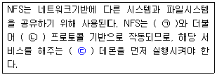
- ㉠ TCP ㉡ NIS ㉢ realmd
- ㉠ NAS ㉡ CIFS ㉢ xinetd
- ㉠ NIS ㉡ RPC ㉢ portmap
- ㉠ UDP ㉡ HTTP ㉢ yum
(정답률: 52%)
66. 다음은 특정 명령을 이용해서 웹 서비스 동작 여부를 확인하는 과정의 일부이다. ( 괄호 ) 안에 들어갈 명령어로 알맞은 것은?
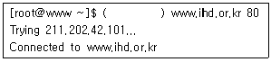
- ssh
- ftp
- telnet
- ping
(정답률: 58%)
67. 다음 중 Secure 기반의 원격제어 서비스와 연관이 없는 것은?
- ssh
- scp
- smv
- sftp
(정답률: 51%)
68. 다음 중 사용자가 리눅스 상에서 전자우편을 주고받기 위하여 사용하는 프로그램으로 틀린 것은?
- KMail
- Thurnderbird
- Mozilla Mail
- Outlook Express
(정답률: 57%)
69. 다음 중 월드 와이드 웹(WWW)에 대한 설명으로 틀린 것은?
- 분산된 자원 처리를 목적으로 CERN에서 시작되었다.
- 분산 클라이언트-서버 모델을 기반으로 한다.
- 클라이언트는 서버의 문서에 대해서 HTML을 사용하여 간단한 수정을 할 수 있다.
- 하이퍼텍스트와 하이퍼미디어의 개념을 사용한다.
(정답률: 49%)
70. 다음 중 텔넷(Telnet) 과 관련된 메시지 파일로 틀린 것은?
- /etc/motd
- /etc/motd.net
- /etc/issue
- /etc/issue.net
(정답률: 43%)
71. 다음 중 리눅스에서 서비스 가능한 프로토콜 목록이 정의된 파일로 알맞은 것은?
- /etc/protocols
- /etc/services
- /dev/protocols
- /dev/services
(정답률: 40%)
72. 첫 번째 이더넷카드에 IP 주소를 설정하려고 한다. 다음 ( 괄호 ) 안에 들어갈 알맞은 내용으로 알맞은 것은?
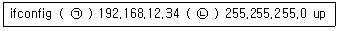
- ㉠ dev0 ㉡ netmask
- ㉠ dev0 ㉡ subnet
- ㉠ eth0 ㉡ subnet
- ㉠ eth0 ㉡ netmask
(정답률: 64%)
73. 리눅스 시스템에 설정된 첫 번째 네트워크 인터페이스를 해제하려고 할 때 사용하는 명령으로 알맞은 것은?
- ipconfig eth0 terminate
- ipconfig eth0 down
- ifconfig eth0 terminate
- ifconfig eth0 down
(정답률: 69%)
74. 다음 중 커널 관련 명령에 대한 설명으로 틀린 것은?
- /sbin/modprobe : 모듈을 검색하여 적재한다.
- /sbin/modprobe -r : 모듈을 제거한다.
- /sbin/insmod : 적재되어있는모듈의정보를보여준다.
- /sbin/rmmod : 적재되어 있는 모듈을 제거한다.
(정답률: 44%)
75. 인터넷 서비스를 사용하기 위해서는 IP 주소 등을 수동으로 설정하거나 DHCP 서버를 통해 자동으로 할당 받을 수 있다. 다음 중 인터넷 서비스를 위해 설정하는 항목으로 가장 거리가 먼 것은?
- Netmask
- Gateway
- DNS
- MAC
(정답률: 49%)
76. 다음 중 라우팅 경로를 확인하거나 변경할 때 사용하는 명령으로 알맞은 것은?
- ifconfig
- netstat
- route
- traceroute
(정답률: 56%)
77. 다음에서 설명하는 내용으로 알맞은 것은?
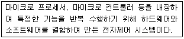
- 임베디드 시스템
- 서버 가상화 시스템
- 리눅스 클라우드 시스템
- 클러스터링 시스템
(정답률: 74%)
78. 다음 중 부하분산 클러스터(LVS)의 구성요소로 가장 알맞은 것은?
- 채널 본딩(Channel Bonding)
- 로드 밸런서(Load Balancer)
- 주 서버(Primary Node)
- 미들웨어(Middleware)
(정답률: 56%)
79. 다음에서 설명하는 내용으로 알맞은 것은?
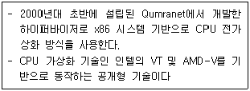
- VMware
- XEN
- VritualBox
- KVM
(정답률: 38%)
80. 다음에서 설명하는 클라우드 서비스의 종류로 알맞은 것은?
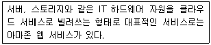
- IaaS
- PaaS
- SaaS
- ZaaS
(정답률: 58%)
"chmod 754 test.txt"는 사용자에게는 읽기, 쓰기, 실행 권한을 부여하고, 그룹과 다른 사용자에게는 읽기, 실행 권한을 부여하는 것입니다. 이는 7(=4+2+1)이 사용자 권한, 5(=4+1)가 그룹 권한, 4(=4)가 다른 사용자 권한을 나타냅니다.
"chmod u+rwx,go+r test.txt"는 사용자에게 읽기, 쓰기, 실행 권한을 부여하고, 그룹과 다른 사용자에게는 읽기 권한을 부여하는 것입니다.
"chmod u=rwx,g=rx,o=r test.txt"는 사용자에게 읽기, 쓰기, 실행 권한을 부여하고, 그룹에게는 읽기, 실행 권한을 부여하고, 다른 사용자에게는 읽기 권한을 부여하는 것입니다.
"chmod u+x test.txt"는 사용자에게 실행 권한을 부여하는 것입니다.